先知道這三件事
- 資料只存在你自己的手機裡，沒有帳號、沒有伺服器
- 同一個網址，每個人各記各的帳，互不干擾
- 沒訊號也照樣拍，有訊號會自動補辨識
1開始前（出發前做一次）
大約 10 分鐘。三件事做完就能用。截圖都可以點開放大。
① 申請自己的 Gemini API key（免費）
- 打開 aistudio.google.com/apikey，用 Google 帳號登入
- 按 Create API key，把那一串字複製起來
每個人一定要用自己的 key
辨識的額度是綁在 key 上的，共用一把會互相吃掉額度，拍到一半就不能辨識了。
② 加到主畫面
- iPhone：用 Safari 打開網址 → 下方「分享」→ 加入主畫面
- Android：用 Chrome 打開 → 右上角 ⋮ → 安裝應用程式
之後從桌面的圖示打開，就是全螢幕的 App，沒有網址列。
③ 填設定
按右上角的 ⚙️ 進設定，由上往下填：
{kind=link}
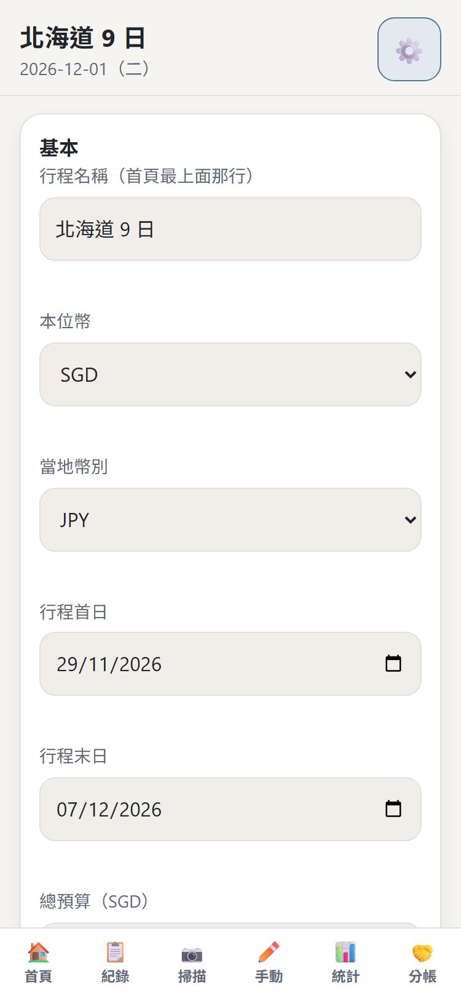
{kind=link}
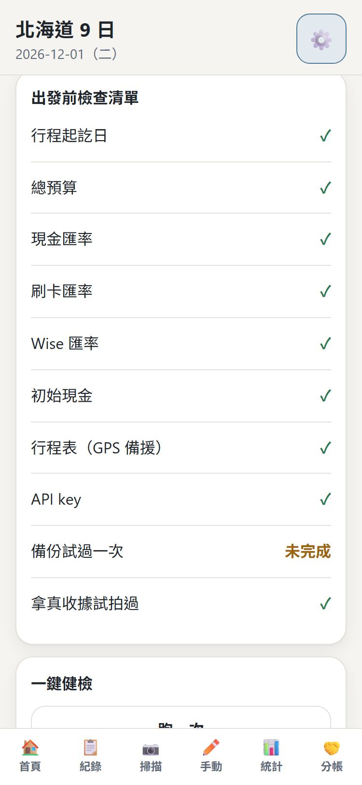
| 欄位 | 怎麼填 |
|---|---|
| 行程名稱 | 顯示在首頁最上面，例如「北海道 9 日」 |
| 本位幣／當地幣別 | 新加坡人選 SGD，去日本選 JPY |
| 行程首日／末日 | 出發和回程的日期 |
| 總預算 | 這趟打算花多少（用本位幣）。App 會自動除以天數 |
| 匯率 | 現金、刷卡、Wise 各填一個。現金匯率填你換錢時實際拿到的，1 新幣換到多少日圓 |
| 付款人與現金 | 你的名字、出發時帶多少日圓現金、Wise 裡有多少日圓 |
| 同行者 | 一起分帳的人，只要填名字（不用管他的錢包） |
| 行程 | 哪幾天在哪個城市。GPS 抓不到時靠它判斷城市 |
| API key | 貼上第 ① 步複製的那一串 |
為什麼匯率要自己填？
換現金、刷卡、Wise 的成本都不一樣。用你真正付的匯率算出來的，才是你真的花掉的錢。
2首頁：一眼看今天的狀況
{kind=link}
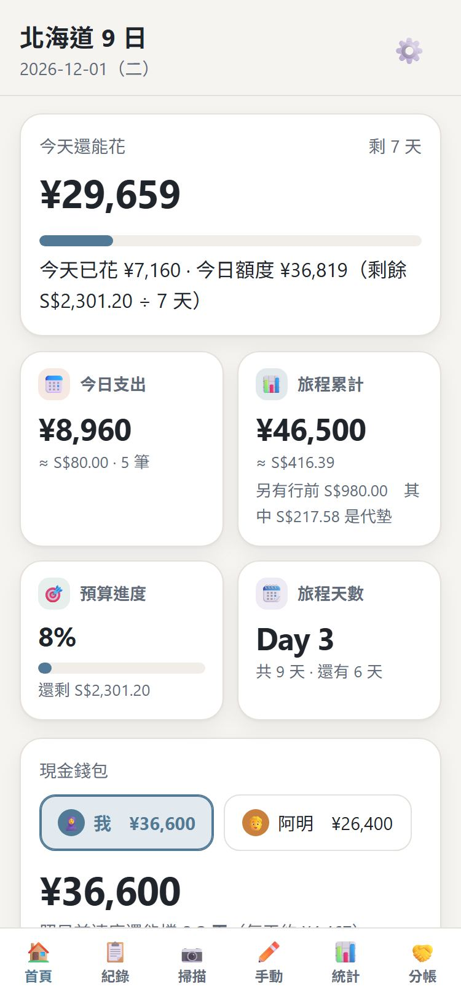
{kind=link}
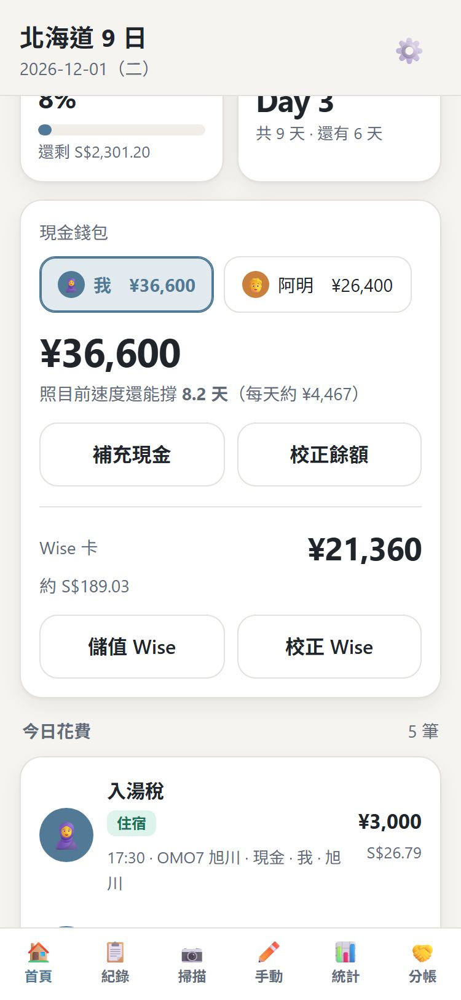
- 今天還能花：剩下的預算 ÷ 剩下的天數，再扣掉今天已經花的
- 現金錢包：錢包裡應該還剩多少日圓。下面會寫「照目前速度還能撐幾天」
- 去 ATM 領錢之後按 補充現金；Wise 加值就按 儲值 Wise
- 數了錢包發現對不上，按 校正餘額，把實際的數字填進去就好
3拍收據
最常用的功能。拍完就可以走，辨識在背景跑。
{kind=link}
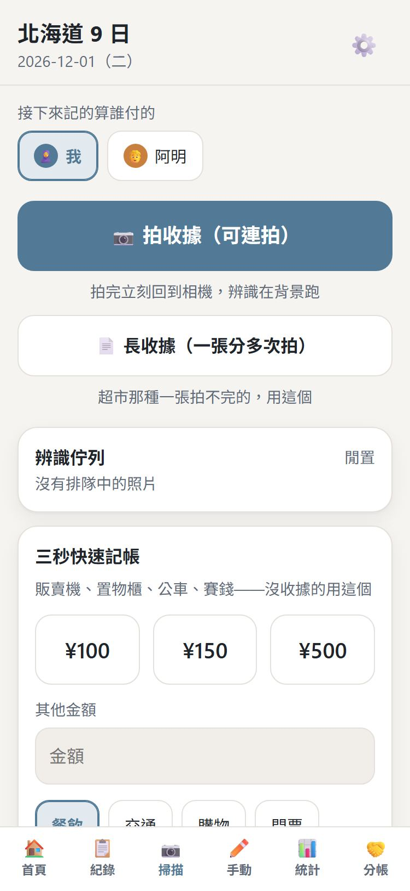
{kind=link}
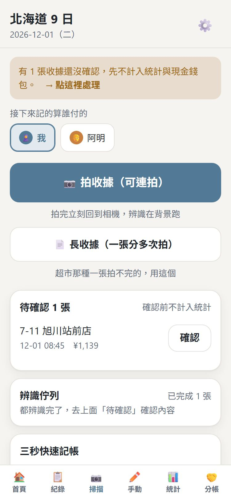
- 先選 「接下來記的算誰付的」（只有一個付款人就不會出現這一排）
- 按 📷 拍收據（可連拍），拍完立刻回到相機，可以一直拍下一張
- 辨識好的收據會出現在 待確認。有空的時候（等車、回飯店）再一張一張按 確認
還沒確認的收據不會算進去
統計和錢包只算你確認過的，所以數字永遠是你看過的。
4確認收據（順便分帳）
看一下 AI 讀得對不對，順便選這張誰有份。
{kind=link}
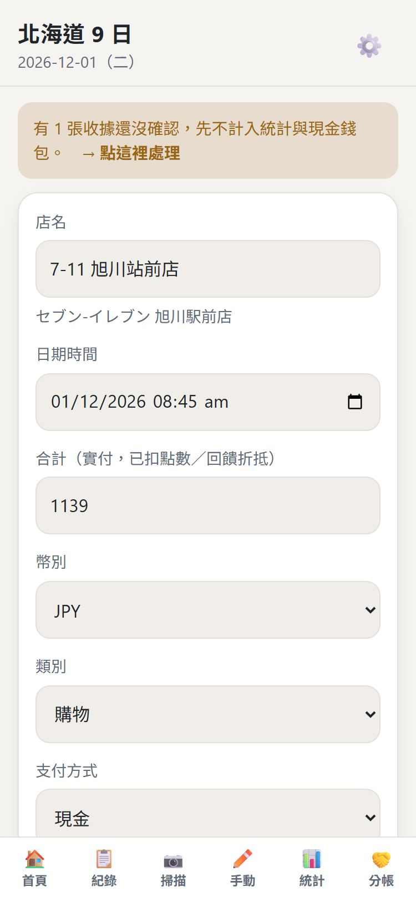
{kind=link}
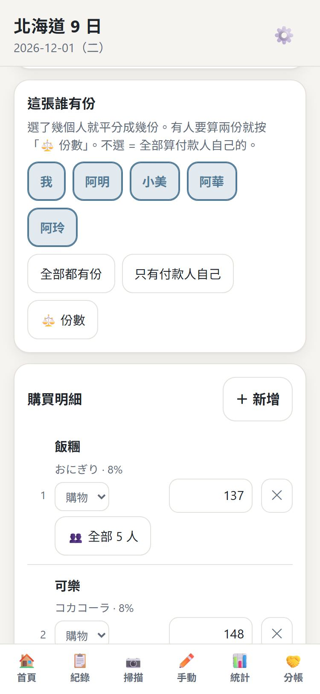
- 對一下 店名、合計、類別、支付方式，錯了直接點欄位改
- 這張誰有份：選了幾個人就平分成幾份。按 全部都有份 最快；什麼都不選 ＝ 全部算付款人自己的
- 有人吃比較多？按 ⚖️ 份數，讓他算兩份
- 一張收據裡混了不同人的東西？往下到 購買明細，那一行單獨選人
- 最下面顯示 「✓ 品項加總 = 合計」 才能存，按 確認儲存
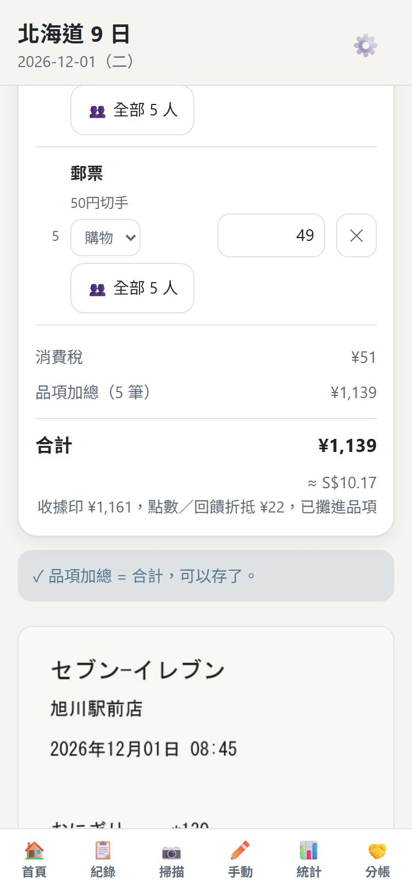
收據上有點數折抵、無現金回饋？
例如收據印 ¥1,161，無現金回饋 −¥22，你實際付 ¥1,139。
App 會直接用 ¥1,139，列表、統計、錢包、分帳全部都是這個數字，
確認頁下面會寫一行「收據印 ¥1,161，折抵 ¥22」讓你對得起來。
5長收據（一張拍不完）
超市、藥妝店那種很長的收據，分幾段拍，最後合成一張。
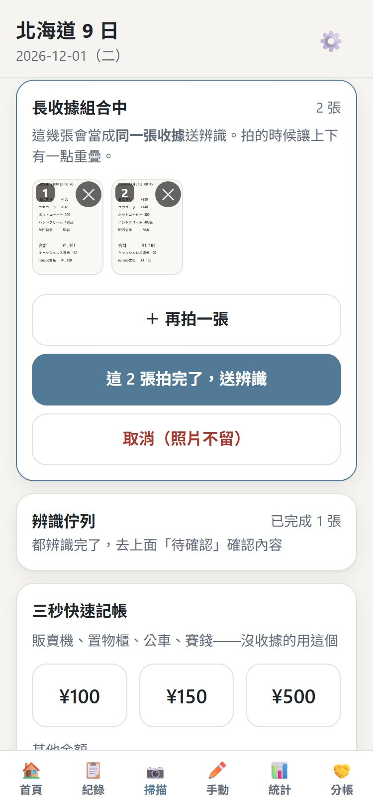
- 按 📄 長收據（一張分多次拍）
- 從上往下分段拍，每段上下重疊一點點。按 ＋ 再拍一張 繼續
- 拍壞的那張按右上角 ✕ 刪掉，編號會自己重排
- 拍完按 這 N 張拍完了，送辨識，只會出一張收據
第一張拍完要等幾秒
第一次會先抓 GPS 位置，最久大約 8 秒，不是當機。
6沒有收據的花費
{kind=link}
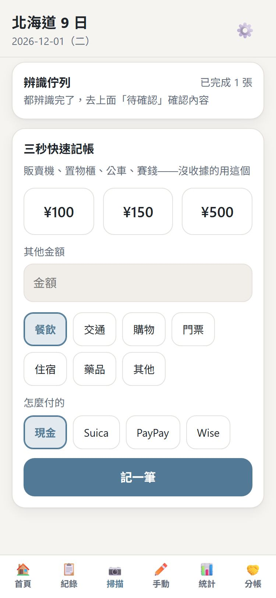
{kind=link}
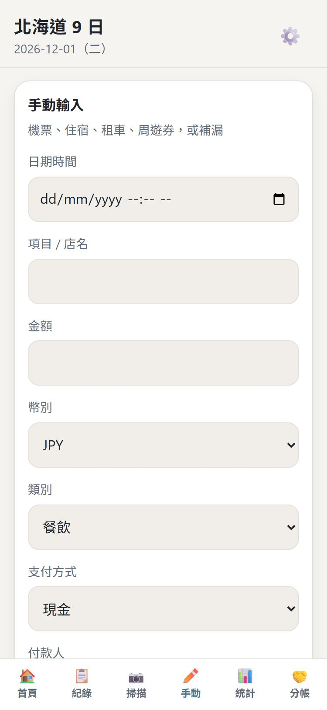
販賣機、置物櫃、公車、神社香油錢
掃描頁往下捲到 三秒快速記帳：點金額（或自己打）→ 選類別 → 選怎麼付的 → 記一筆。
機票、住宿這種出發前就付的
點下面的 ✏️ 手動。日期早於行程首日的，會自動歸成「行前」，不會把每日預算撐爆。
用新幣現金付的不會扣日圓錢包
錢包裡裝的是日圓現金。在新加坡用新幣付的機票，幣別選 SGD 就不會動到日圓錢包。
7紀錄：找、改、刪
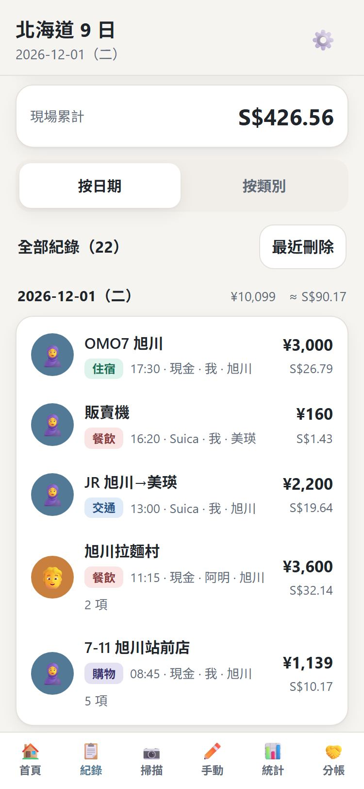
- 最上面可以 搜尋（店名、品項、備註），也可以用類別、付款方式、人來篩選
- 按日期 ／ 按類別 切換排法
- 點任何一筆就回到確認頁，可以改、也可以刪
- 刪錯了？按 最近刪除 救回來
8統計
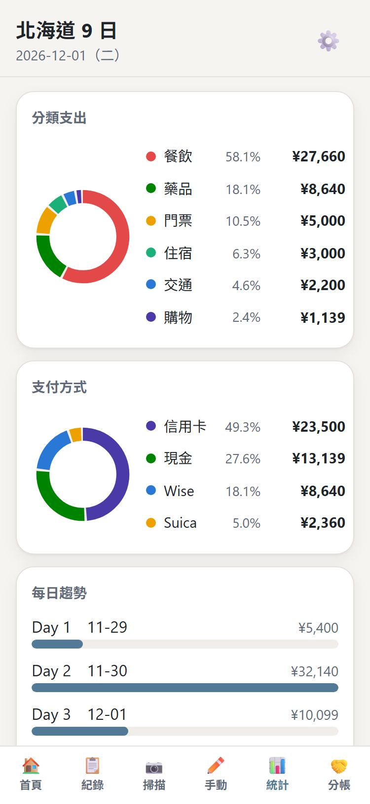
分類、支付方式、每天花多少、在哪個城市花的、每個付款人花多少、花最多的前十筆，全部在這一頁。
待退稅累計是免稅購物還沒退回來的稅，要到機場才退得到，是「應收」，不是已經省下來的錢。
9分帳：誰要還你多少
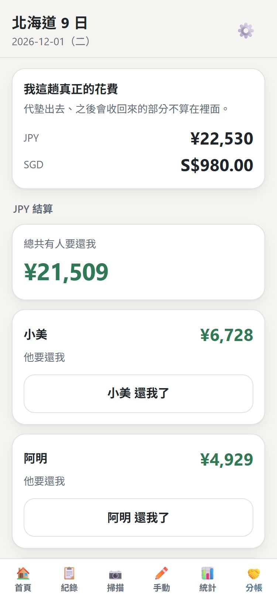
- 我這趟真正的花費：扣掉你幫別人墊的，才是你自己花的
- 下面每個人一張卡，寫著他要還你多少
- 收到錢了，按 ○○ 還我了，填收到多少（可以只還一部分），他的欠款就會扣掉
- 反過來是你欠別人的，按鈕會寫 我還 ○○ 了
分帳頁是空的？
代表確認收據時都沒有選「這張誰有份」。回到紀錄點進那一筆，補選就會算出來。
10容易誤會的地方
| 你可能以為 | 其實 |
|---|---|
| Suica 儲值 ¥5,000 是一筆花費 | 不是。錢只是從錢包換到卡裡。會扣現金錢包，但不算花費，不然之後用卡買東西會算兩次 |
| 免稅買東西，當場就省了稅 | 不是。日本 2026-11-01 起改新制，店裡付的是含稅價，稅要離境時在機場退 |
| 紀錄上的金額跟收據印的不一樣 | 收據上有點數折抵、無現金回饋的話，App 記的是你實際付的。確認頁會寫差多少 |
| 金額下面那個小字 | 換算成新幣的參考值，用你設定的匯率算的 |
| 沒花錢那天怎麼不見了 | 有，是 ¥0。每日趨勢每一天都會列出來 |
11出問題的時候
| 狀況 | 怎麼辦 |
|---|---|
| 最上面出現「有新版本可以更新」 | 點它就好，會重新整理一次。確認頁改到一半的先存起來再點 |
| 下面那排按鈕浮到畫面中間 | iPhone 偶爾會這樣。把 App 完全關掉（從底部往上滑、把它滑掉）再打開 |
| 拍了一直在排隊 | 多半是沒訊號。回到有訊號的地方會自己繼續 |
| 一直顯示「失敗」 | 檢查設定裡的 API key；或是當天額度用完了（每天日本時間下午 5 點左右重置） |
| 金額都顯示「—」 | 匯率沒填，去設定補上 |
| 城市空白或不對 | GPS 沒抓到。在設定把「行程」填完整，或點進那一筆手動改 |
| 一次拍很多張跑很慢 | 正常，每分鐘只送 15 張，避免撞到 Google 的上限 |
12回國之後
設定頁最下面的 匯出與備份：
- 匯出 Excel：一頁明細、一頁統計，拿去對帳、報帳
- 備份（含照片）：整本帳連收據照片存成一個檔，換手機可以用 還原備份 救回來
回國後盡快匯出
資料只在手機裡。iPhone 對很久沒打開的網站會自動清掉資料，旅行期間天天在用沒關係，回國後別放著。
隱私
- 收據照片、金額、位置，全部存在你自己的手機，沒有上傳到任何伺服器
- 只有辨識的那一刻，照片會送去 Google Gemini 讀，讀完就沒了
- API key 只存在你的手機，不會進備份檔
畫面上的名字和金額都是示範用的假資料。
← 回到 App